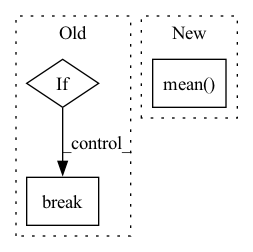

Pattern ID :25192

Before Change
print(f"(//{i})[{np.round(time.time()-iniv,2)}s] Valid Loss {loss.detach().item()}, cover_error {loss_cover.detach().item()}, secret_error {loss_secret.detach().item()}")
if i >= int(datalen//8): break
avg_valid_loss = np.mean(valid_loss)
avg_valid_loss_cover = np.mean(valid_loss_cover)
avg_valid_loss_secret = np.mean(valid_loss_secret)
After Change
avg_valid_loss_cover = np.mean(valid_loss_cover)
avg_valid_loss_secret = np.mean(valid_loss_secret)
avg_valid_snr = np.mean(valid_snr)
avg_valid_ssim = np.mean(valid_ssim)
wandb.log({
"vd_loss": avg_valid_loss,
"vd_cover_loss": avg_valid_loss_cover,
In pattern: SUPERPATTERN
Frequency: 3
Non-data size: 3
Instances
Fragment ID: 77063895
Project Name: margaritageleta/pixinwav
Commit Name: aae6873fcf4f1a5d251aae3330f1d70fd05bf989
Time: 2021-02-14
Author: noticiasmundiales99@gmail.com
File Name: src/trainer.py
M Class Name: AnonimousClass
N Class Name: AnonimousClass
M Method Name: validate(6)
N Method Name: validate(5)
M Parent Class:
N Parent Class:
M File Name: src/trainer.py
N File Name: src/trainer.py
M Start Line: 197
M End Line: 219
N Start Line: 217
N End Line: 280
'>
Before Change
for songID, track in enumerate(self.mus.tracks):
for start in np.arange(0, track.duration, duration - overlap):
if start + duration >= track.duration:
break
track.chunk_start = start
track.chunk_duration = duration
target = track.targets[self.target].audio.transpose(1, 0)
After Change
sources = np.concatenate(sources, axis=0)
mixture = sources.sum(axis=0)
self.std[songID] = np.std(mixture.mean(axis=0))
self.samples_per_epoch = samples_per_epoch
'>
Fragment ID: 77063893
Project Name: tky823/dnn-based_source_separation
Commit Name: b7a22e8f24f8206fc28ef8b7f01f01fcce0a498c
Time: 2021-08-10
Author: 40362510+tky823@users.noreply.github.com
File Name: egs/musdb18/conv-tasnet/src/adhoc_dataset.py
M Class Name: WaveTrainDataset
N Class Name: WaveTrainDataset
M Method Name: __init__(8)
N Method Name: __init__(8)
M Parent Class: WaveDataset
N Parent Class: WaveDataset
M File Name: egs/musdb18/conv-tasnet/src/adhoc_dataset.py
N File Name: egs/musdb18/conv-tasnet/src/adhoc_dataset.py
M Start Line: 91
M End Line: 117
N Start Line: 83
N End Line: 98
'>
Before Change
next_state, reward, done, _ = self.env.step(action)
traj_reward += reward
state = next_state
if done:
break
rewards.append(traj_reward/self.env.reward_scale)
return np.mean(rewards)
After Change
break
lengths.append(traj_length)
rewards.append(traj_reward/self.env.reward_scale)
return np.mean(rewards), np.mean(lengths)
'>
Fragment ID: 77063896
Project Name: x35f/unstable_baselines
Commit Name: 0b6440a1ac42d843c3b241a04e66c572896a1297
Time: 2021-03-09
Author: 1621322691@qq.com
File Name: sac/trainer.py
M Class Name: SACTrainer
N Class Name: SACTrainer
M Method Name: test(1)
N Method Name: test(1)
M Parent Class: BaseTrainer
N Parent Class: BaseTrainer
M File Name: sac/trainer.py
N File Name: sac/trainer.py
M Start Line: 76
M End Line: 88
N Start Line: 78
N End Line: 94